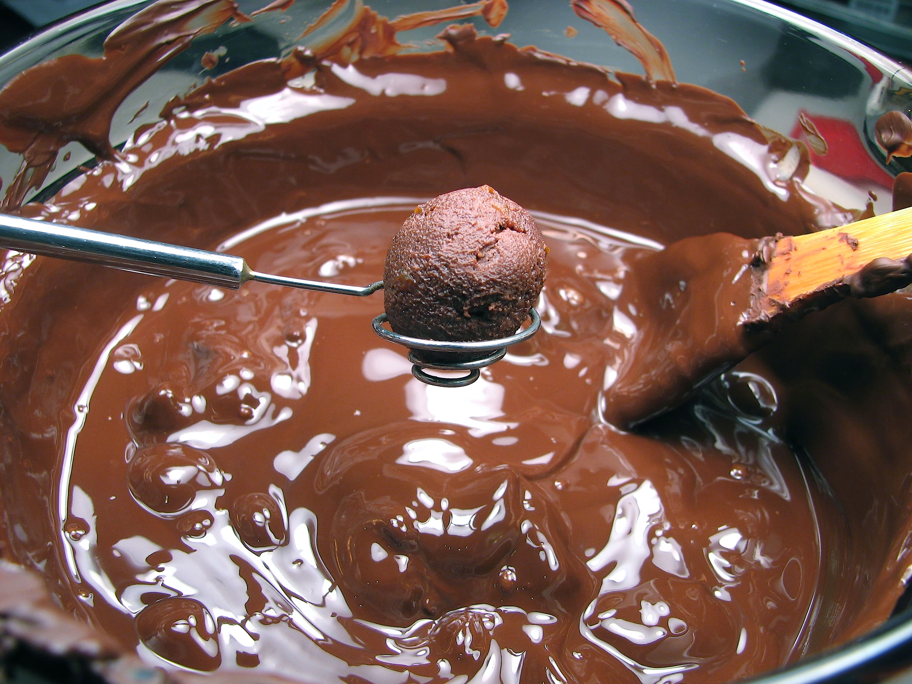

Home
Oreo Truffles

Ingredients
-
1 pkg Oreo cookies
-
1 (8 oz) pkg cream cheese, softened
-
1 (12 oz) pkg semi-sweet chocolate chips
-
3 Tbsp vegetable shortening
Steps
-
Process Oreos to crumbs in a food processor
-
Add cream cheese
-
Continue to process until completely incorporated (this part could also be done in a mixer)
-
Roll mixture into small balls
-
Place on wax paper-lined baking sheet (you can place toothpicks in to make dipping later easier)
-
Freeze until solid (at least 1 hour or up to days ahead)
-
Microwave chocolate chips and shortening on 50% power until melted (about 4 minutes) stirring in between
-
Use a tooth pick to dip balls in chocolate to coat all sides
-
Return to baking sheet
-
When set place in freezer for 15 minutes
-
Take balls off baking sheet and place in container
-
Store in fridge or freezer